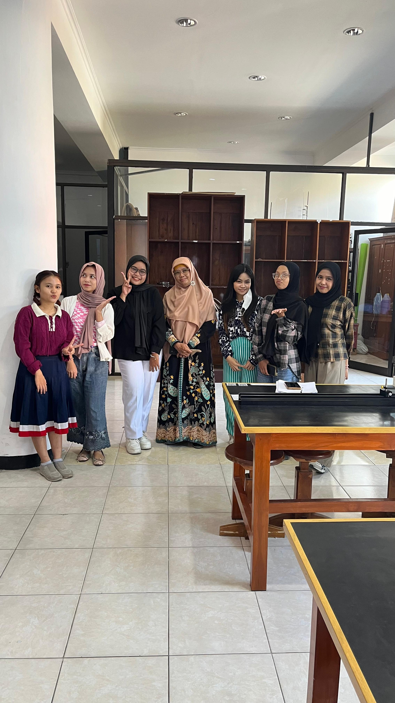
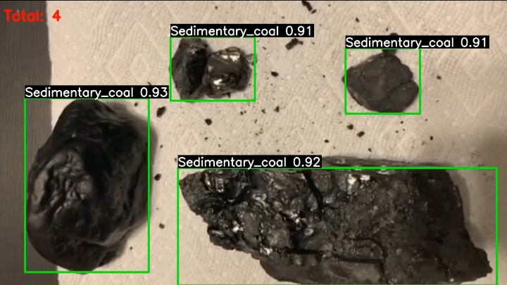
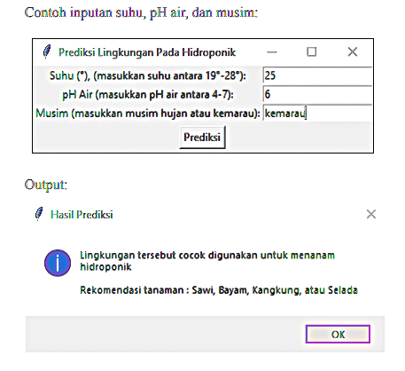
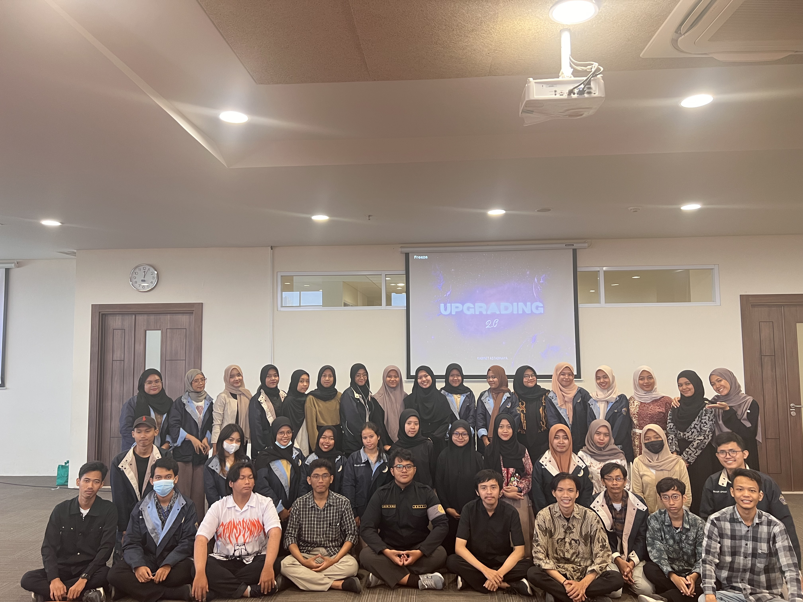
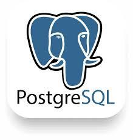
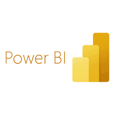
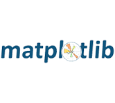

Halo, saya
Robiatul Isnaini
Operational Excellence & Process Improvement
Lulusan Fisika Komputasi

Halo, saya
Saya adalah Fresh Graduate S-1 Fisika Universitas Airlangga dengan fokus pada Operational Excellence, perbaikan proses, dan optimasi efisiensi berbasis data. Berpengalaman dalam menganalisis data operasional dan konsumsi energi industri di PPSDM MIGAS Cepu, yang menghasilkan identifikasi potensi penghematan energi sebesar 43,12% serta efisiensi biaya listrik Rp405.462 per hari. Didukung oleh kemampuan standardisasi alur kerja, pengelolaan data laboratorium, dan otomasi teknis, saya terbiasa memberikan solusi analitis untuk mendukung keputusan operasional yang presisi.

Departemen Fisika
Beberapa proyek pilihan yang mencerminkan kemampuan berpikir analitis dan keterampilan teknis saya.

Pengembangan dasbor kontrol operasional menggunakan Microsoft Excel untuk memetakan kinerja penjualan, mengevaluasi efisiensi variasi menu, dan mengidentifikasi pola permintaan guna mendukung perencanaan operasional gerai.
Excel · Sales Analisis · Pivot Table · Dashboard Visualization · Grafik Visualization
Lihat detail proyek Lihat di GitHub
Pengembangan dasbor kontrol operasional menggunakan Power BI dan Power Query untuk memantau Key Performance Indicators (KPI), mengevaluasi efisiensi margin keuntungan, serta mengidentifikasi risiko operasional akibat strategi diskon dan produk yang kurang optimal.
Lihat detail proyek Lihat di GitHub
Penerapan prosedur pembersihan dan standardisasi pangkalan data menggunakan Google Sheets untuk mengeliminasi anomali, memperbaiki struktur data yang tidak konsisten, dan memastikan integritas data pendukung keputusan.
Google Spreadsheet · Cleaning Data
Lihat detail proyek Lihat di GitHubPengelolaan dan analisis data transaksi skala menengah (5,000 baris) menggunakan PostgreSQL dan SQL untuk memetakan metrik kinerja operasional, mengevaluasi profitabilitas kategori produk, serta mengidentifikasi pola perilaku transaksi.
PostgreSQL · Data Excel · Visualisasi · Analisis Penjualan
Lihat detail proyek Lihat di GitHubPenerapan teknik pembersihan data dan analisis statistik menggunakan Microsoft Excel terhadap 2.486 data listing properti guna melakukan standardisasi format harga, pemetaan variansi wilayah, dan evaluasi struktur biaya sewa di area Jabodetabek.
Excel · Visualisasi
Lihat detail proyek Lihat di GitHub
Evaluasi performa dan analisis efisiensi model berbasis YOLOv8 untuk menguji variasi skala dataset terhadap tingkat akurasi serta stabilitas pemrosesan objek secara terstruktur.
Python · YOLOv8 · Computer Vision · Model Evaluation · Data Optimization
Lihat detail proyek Lihat di GitHub
Proyek ini mengembangkan instrumen kontrol berbasis model prediktif (Random Forest) yang dilengkapi antarmuka interaktif untuk mengevaluasi parameter lingkungan secara otomatis serta mengoptimalkan rekomendasi tindakan operasional budidaya hidroponik.
Python · Random Forest · Scikit-learn · Process Control · Desktop Application
Lihat detail proyek Lihat di GitHub
Universitas Airlangga

Universitas Airlangga
Excel

Google Spreadsheet

Google Colab

SQL (PostgreSQL)

Power BI
PowerPoint
draw.io
Python

Matplotlib

Numpy
Pandas
Github

Lulusan Baru
Sarjana Fisika | Fisika Komputasi
IPK: 3,30/4,00
Agu 2022 - Jul 2026
Silakan terhubung dengan saya melalui GitHub atau LinkedIn.